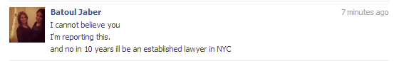

< < < Back
All Girls Are Spoiled Children – Return Of Kings
If you grew up with younger siblings—or were one yourself—you’re well familiar with the phenomenon of the younger brother or sister always trying to do what the older kids were doing, wanting everything the older siblings were getting, and challenging the big boys in general. When big brother got a skateboard, little brother wanted one too—even though everyone knew he was going to fall on his ass and stop using it. When big brother ordered a double cheeseburger, little sister wanted to order it too, even though she couldn’t even finish the single in previous sittings.
If the parents knew how to run things, they put a stop to that noise with firm rules about when you got certain things and when you’d be allowed to engage in certain activities. If they were shitty parents, they caved. Invariably, the world enjoyed or suffered the consequences of this vital parenting decision.
This dynamic describes today’s woman. Women bear an uncanny resemblance to a bratty little sibling—and children in general—in an uncomfortable variety of ways.
In this calculus, you’re the big brother, she’s the little sister (or brother), and society’s the parents. Let’s take a look.
Trying to be up in everything.
Nothing drives a spoiled kid crazier than being told they can’t do, or have, something because it’s for the big kids only. And nothing drives today’s woman crazier than being told she can’t go somewhere because it’s for men only. You see this dynamic in a multitude of places, from private golf clubs to sports bars to military combat. Whether it’s fun or not–or whether they can hang or not–they want to be there anyway.
Everything’s a test.
Like a growing puppy constantly trying to move up in the pecking order, a younger sibling is in a constant state of competition, and in a mindset to test and challenge boundaries. Competition is especially noticeable between siblings of the same gender, though it’s not necessary that they be the same. “I’m stronger than you.” “I’m hotter than you.” “I’m smarter than you.” Testing and challenging is often directed at the superior authority—the parents.
A girl you’re dating will similarly test you from Jump Street and won’t stop until you—or your relationship—is in the grave. The hotter the girl, the more frequent the tests. Girls will try to get away with changing plans on you out of the blue, disrespecting your stuff, calling you names, talking to her ex-boyfriends, dressing like shit, gaining weight, showing up late. More times than not, these are direct affronts to your masculinity and leadership.
Always want the newest toy and bore easily.
Women, like children with ADD, need to be constantly entertained with ever-more-elaborate stimuli. That includes actual things to distract them—like Facebook, the newest iPhone, and picture-driven websites—but also people. Like her toys, you’re a mere feature in her life, and unless you remain elusive, fashionable, and interesting, you too will be upgraded.
Are copy-cats.
Kids like doing what they see other kids—or older brothers—doing. As a rule, they’re not risk-takers, content to go it alone or unafraid to flaunt their avant-garde ideas, styles, or methods. It should therefore come as no surprise that seemingly every (American) girl walks around with a Starbucks Milkshake in one hand, an iPhone in the other, and Ugg Boots on her feet.
Run to the parents when they’re losing the fight.
Despite his claim to be tougher than you, rest assured that your little brother will scream out for your parents as soon as you have him pinned to the floor. He’ll even manufacture or exaggerate the conflict if it means winning the fight. Whether it’s girls getting in a guy’s face in a bar because she knows she has a whole bar of white knights (and bouncers) to back her up; girls with massive Internet courage that evaporates the moment you strike back; or even girls calling the cops and manufacturing cases of domestic “abuse”; know that a lot of women’s “empowerment” is a false confidence predicated on having the parents on speed dial.

Guys in the manosphere often ponder out-loud whether feminism isn’t just some giant, collective “shit test” from women—that is, a giant test of men’s aggregate mettle. I suspect that—to a certain extent—it is, while being quick to add that feminism is merely one tray in a Las-Vegas-sized buffet of women’s child-like behavior. Both society (parents), and men (older brother), have failed to keep our bratty little sister in check.
The solution: treat them like the little-siblings-who-never-grew-up that they are.
Read More: All Girls Like Muscular Guys


{kind=link}
{kind=link}
{kind=link}